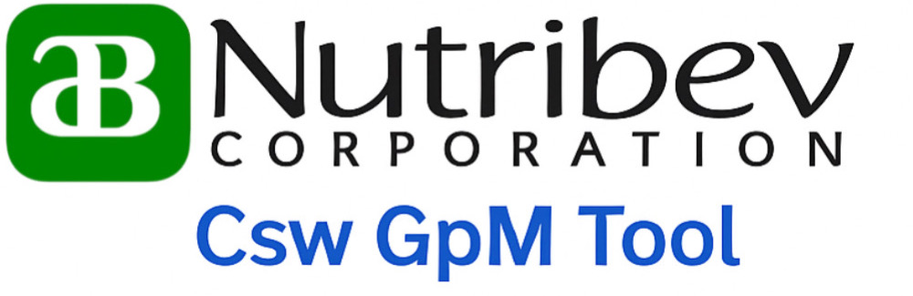

Operator Information
Operator Name:
Shift Type:
Select Shift
Day Shift
Night Shift
Continue
Deepwell Status
Deepwell 9:
Deepwell 10:
Back
Proceed to Timer
GPM Calculation
00:00.00
Start
Stop
Reset
GPM: 0.00
Formula: GPM = 1 / second x 3600 x 4.4
Recent Flow Logs as of:
Download Log (CSV)
Clear All Logs
Toggle Dark Mode
ScreenShoot to Report
Back to Deepwell Status
GPM Measurement Report
0.00
GPM
00:00s
Duration
Operator:
Deepwell 9:
Deepwell 10:
Shift:
Formula: GPM = 1 / second x 3600 x 4.4
Full Flow Log:
OK
Print Report